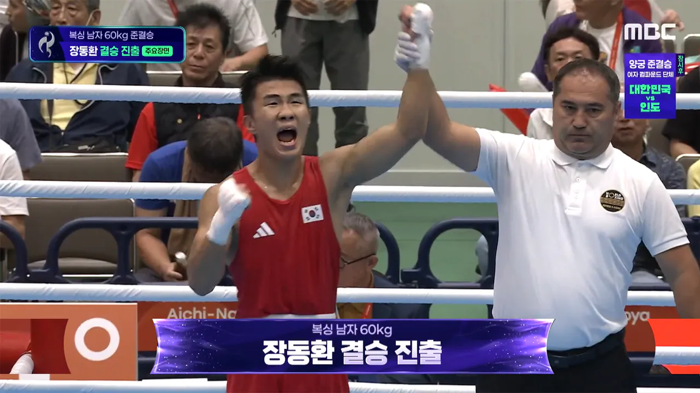
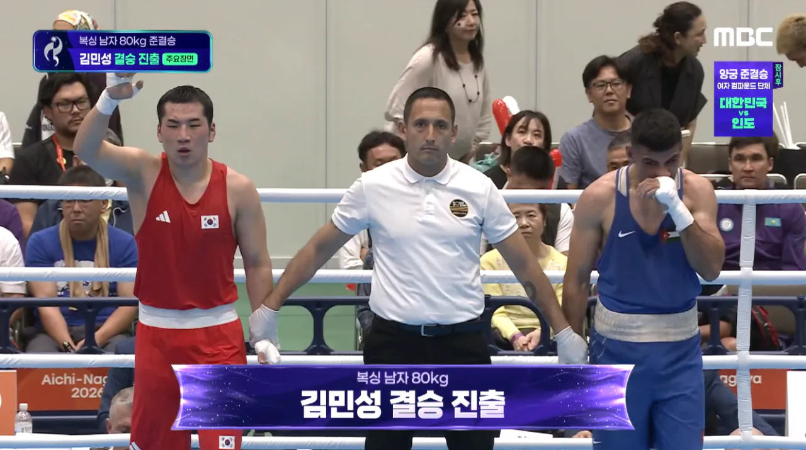
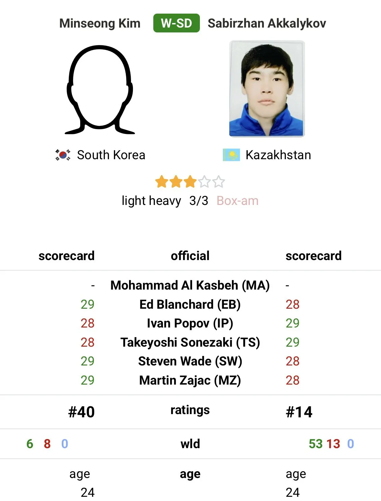
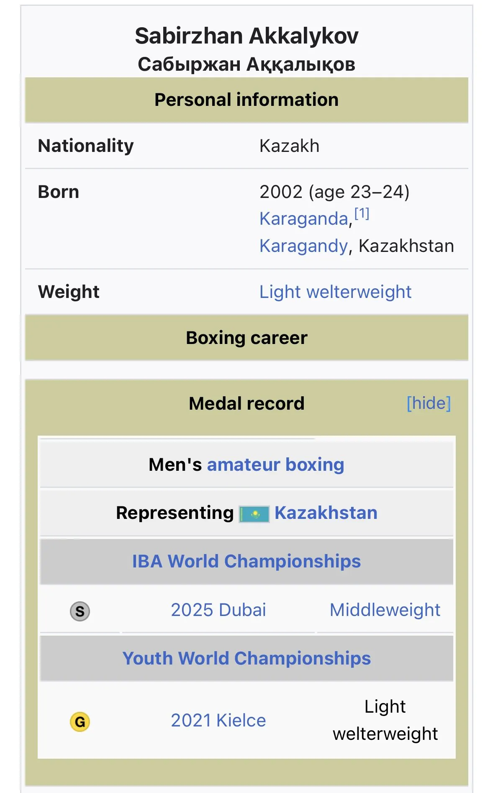

-60kg에 장동환, -80kg에 김민성 두 선수가 결승전 진출함
한국에서 아시안게임 금메달 마지막으로 나온게 2014년 인천 아시안게임에서 신종훈, 함상명 두 선수가 전부임
12년만에 금메달 노려볼 수 있게됨


더 대단한건 김민성 선수가 예선 첫 경기에서 이긴 사비르잔은 작년에 열린 복싱 세계선수권(축구에서 월드컵 위상) 은메달 출신임
아시아 농어촌 전형이니 뭐니 논쟁도 불가능하게 그냥 세계적인 선수 꺾고 결승 올라감
결승전 10월 2일에 중계도 해주니까 많관부

ㅂㅅ인가 제목이 복싱인데